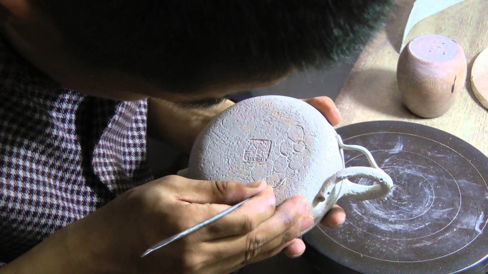

|
В чайном домике на вершине
Поэт Еса Бусон
|
| Чай | Посуда | Коллекционные чаи |
|

Чайники из глины. Исинская глина. Нисинская керамика Введение Из всей огромной массы чайников для заваривания китайского чая, львиную долю занимают именно сделанные из исинской глины. Логично задать вопрос: «А что же это за чайники такие и что в них особенного?». Вот именно об этом мы сегодня и поговорим. Если говорить в целом о китайской глине, то можно выделить несколько основных ее месторождений. Однако наибольшую ценность и соответственно интерес вызывает та, которую добывают из окрестностей города Исин, провинции Цзянсу. Залежи из этого региона не просто огромны, но еще и имеют различный химический состав. Качество такого материала превосходно, она очень пластичны, содержит высокое количество оксидов железа и каолинита, после обжига приобретает пористую структуру, определенную легкость и прочность. И это далеко не все преимущества чайников из исинской глины. Немного истории. История исинских чайников уходит далеко в историю и насчитывает порядка 2 400 лет. Т.е. фактическое открытие глины, ее обработки и конечного производства изделий относится ко временам V в. до н.э. С самого начала появления на свет чайники стали не просто утилитарным атрибутом чаепития, но и зачастую были предметом эстетического любования и коллекционирования. Техника исполнения, ровно как и конечный результат, были различными и определялись исключительно стилистическими предпочтениями мастера. Кто-то черпал вдохновение из окружающей природы и создавал чайники в форме растений, плодов, цветков. Другие обращались к истории и делали чайники в стиле минувшего времени, с элементами прошедших эпох. Были и те, кто в своих произведениях использовал мифические и божественные символы и атрибуты. Не редко чайники по форме были как свободная абстракция и геометрия, полет фантазии мастеров. После того, как форма чайников была сформирована, его загружали в Драконью печь для финального обжига. Так форма фиксировалась, а готовый чайник отправлялся в Нинькин, южную столицу, культурное сосредоточение ценителей практичности и красоты. Очень быстро глиняные чайники заняли высокое место в китайской культуре, наряду с живописью, резьбой и каллиграфией. На сегодняшний день город Исин носит название столицы керамики Китая. В нем трудится и проживает не одна тысяча мастеров. Многие из них носят звания «Великих Мастеров», их продукцию можно увидеть в музеях и на конкурсах. Однако в большинстве своем работают здесь обычные, простые гончары, которые изо дня в день трудятся и производят новую посуду. Об исинской глине. Особенности и свойства. Если говорить коротко и обобщенно, то исинскую глину можно разделить по ценности на 2 группы: из верхних слоев и глубинных слоев. А теперь попробуем разобраться в нюансах и деталях. Глина с поверхностных слоев очень мягкая. Однако из нее принято делать лишь «грубую» посуду и другие изделия. Стоимость у такой продукции будет низкой, так как структура материала не имеет ценных веществ и минералов. Глина из более глубоких слоев добывается от 100 до 150 метров под поверхностью земли. Она обладает хорошим составом, о котором говорилось чуть выше. После добычи, окаменевшую, ее перетирают в порошок, добавляют воду и доводят до состояния, схожего с пластилином. Далее следует этап вылеживания, благодаря которому состав окончательно стабилизируется и структурируется. Некоторое время назад этот процесс по времени мог достигать порядка 100 лет. Сегодняшние темпы и необходимые объемы посуды не позволяют глине вылежаться, что сказывается на ее количестве и цене соответственно. По этому случаю даже говорится, что запасы глины стремительно истощаются и ее становится с каждым годом всё меньше в общей массе. Весь этот глиняный бум и ажиотаж дали толчок развитию еще одному региону Китая, возрадив в нем старый керамический промысел – нисинская керамика (坭兴陶). О ней мы немного поговорим чуть дальше. Возвращаясь к теме исинской глины хочется сказать, что помимо возраста важным аспектом также является минеральный состав. Именно он в конечном счете определяет цвет исинской глины. Несмотря на все разделения и градации она имеет обобщенное название – Цзы Ша (紫砂). В переводе это означает – «пурпурный песок». Видов ее существует огромное множество. Не редко случается, что и эти виды смешивают друг с другом, тем самым получая новые оттенки и цвета. Если говорить о детальной классификации исинской глины, то необходимо брать во внимание такие факторы, как глубину залегания и ее район, состав, окаменелость, цвет и многое другое. Давайте в этой статье остановимся на последнем моменте, а именно на цвете.
Каждая из этих разновидностей также имеет большое количество оттенков и тонов. Немаловажный аспект, который формирует конечный цвет чайника – это температура, с которой происходит обжиг. Если взять один материал, и обработать его с разницей температур буквально в 30-50 градусов, то на выходе мы получим как разные оттенки, так и кардинально разный цвет. Так, например, Люй Ни, если мы будем использовать температуру 1170 градусов, то получим золотисто-коричневый цвет. При температуре 1200 градусов на выходе изделие будет зеленовато-желтого оттенка. А при 1250 градусах мы увидим синий цвет посуды. О чайниках. Художественная составляющая и функционал. Итак, мы коротко рассмотрели основные моменты, которые присущи материалу для изготовления чайников. Теперь давайте перейдем непосредственно к предмету нашей темы. Хочется отметить, что для исинского чайника применимы два важных направления – это художественная часть и функциональные особенности. А теперь немного о функционале. Обычно он тесно связан с художественной частью. Чем выше уровень мастерства и производства чайника, тем качественнее будет его функционал. Что подразумевается под этим словом? Всё просто – удобство заваривания, которое включает как элементарный люфт крышки, толщину стенок, симметрию ручки, чашки и носика, так и качество слива. Все эти нюансы должны быть учтены для того, чтобы использование посуды было максимально продуктивным. Так, например, сильный люфт крышки может способствовать вытеканию чая из-под нее. Не критично, однако не совсем приятно. Толщина стенок и скорость слива зависит какой готовый настой вы получите по итогу. Симметрия всех основных частей влияет на корректную и качественную работу сосуда в целом. Выбор чайника. В продолжении о функционале. О главном. Наверное, самый главный вопрос, с которым зачастую сталкиваются люди, впервые подходящие к выбору чайника – «Какой выбрать?». Для начала давайте определимся с формой. На сегодняшний день их разновидностей просто огромное количество. Однако их можно сегментировать по 4 основным группам:
Если говорить о формах и функционале, то можно провести обобщение с типами чая, который будет завариваться в чайнике. Так, например, для улунов слабой ферментации из тайваня или южной фуцзяни оптимально использовать чайники конусообразные, круглые. Для «гуандунцев» и «уишаньцев» лучше всего подойдут вытянутые чайники с широким, открытым горлышком. Для почечных, мелколистовых чаев лучше всего использовать чайники с коротким и широким носиком. Форма здесь не играет принципиальной роли. Итак, после того, как мы поняли, какую форму нам хочется, можно перейти к следующему моменту – толщина стенок. Да, это тоже может играть важную роль в заваривании. Для выдержанных чаев, шу пуэров, хэй ча, возрастных шэн пуэров, красного чая с большим количеством листьев, улунов сильной ферментации лучше всего подойдут чайники с толстыми стенками. Они способны хорошо удерживать тепло, которое очень любят эти чаи. Наилучшим образом раскрыть улуны слабой ферментации, почечные красные, а также желтые чаи лучше всего сможет чайник в первую очередь с быстрым сливом и тонкой стенкой. Ну и самое главное правило выбора – чайник в первую очередь должен понравиться именно вам. Берите его в руку, посмотрите на сколько он удобен и приятен на ощупь. Обратите внимание на симметрию. Обязательно проверьте как притерта крышка, как работает слив воды. Ну и доверяйте собственному вкусу. В дальнейшем будут и другие чайники, а первые из них останутся приятным напоминанием о начале пути. Нисинская керамика как альтернатива исинской. Город Цзиньчжоу на сегодняшний день носит название южной столицы Китая по производству керамики, вслед за городком Исин. Развитию и росту промысла в данном регионе послужил туризм. Именно он возродил интерес к работам местных мастеров и стал толчком к возрождению местного керамического искусства. Итак, давайте коротко разберемся, что это за нисинская керамика и что она из себя представляет. Во-первых, сразу хочется начать с материала изготовления посуды – это смесь двух глин, добываемых в здешнем регионе: белая и красная. В процессе смешивания этих пород состав получается с достаточно высоким содержанием алюминия, достигающим порядка 15%. Цифра достаточно высокая, особенно если рассматривать ее в сравнении с исинскими материалам, в которых процент того же алюминия варьируется в пределах 20%. По пористой структуре, температуре обжига здесь все практически аналогично, как и с «исинцами», сильных различий здесь нет. Единственное, в чем нисинская глина уступает – это усадка. У нее степень значительно выше, чем у цзы ша, поэтому разновидность форм изделий существенно снижается. Можно ли назвать это существенным недостатком – ну, может быть. Хотя и достаточно спорный вопрос. Всё производство данных чайников происходит на гончарном круге, никаких склеек из частей и прочего. Только ручная работа, только цельные чайники. Еще из приятных особенностей нисинских чайников можно назвать уникальность цветовой гаммы изделия. Случается это по причине смешивания материалов и неравномерным доступом кислорода в процессе обжига. Всё это создает уникальную цветовую гамму, которая больше не повторится ни в одном чайнике. Не менее приятным фактором чайников из Цзиньчжоу является их цена. В сравнении с исинской продукцией они значительно дешевле. Происходит это по причине их изготовления в большинстве своем на крупных фабриках, когда в процессе принимает участие несколько человек. Чайники эксклюзивной авторской работы здесь встречаются крайне редко. Однако это никак не сказывается качестве и уж тем более на завариваемом чае. Вот мы и вкратце разобрались еще с одним регионом по производству керамики, которая на сегодняшний день набирает обороты и темпы роста. Особенности исинских чайников и уход за ними. Как говорилось ранее, исинская глина имеет пористую структуру. Этот момент необходимо учитывать в процессе использования. Что это значит? Такие чайники имеют свойство впитывать в стенки тот чай, который вы завариваете. Это называется «наработка» чайника. По этому случаю не рекомендуется заваривать в одной посуде разные чаи, это может привести к смешению и искажать естественный вкус и аромат завариваемого чая. Некоторые китайские мастера вообще говорят, что даже для каждого сорта лучше всего использовать отдельных чайник. Скорее всего это просто коммерческий ход и личная заинтересованность. Ведь чем больше вы пьете разного чая, тем больше вам необходимо чайников. Достаточно просто заваривать пуэры, улуны, красные чаи отдельно и всё. С точки зрения ухода за чайником недопустимо использовать химические и синтетические моющие средства. Опять же из-за структуры глины, которая всё впитывает в себя. Достаточно просто убрать изнутри заваренный чай, промыть снаружи и изнутри, поставить просушиться. При необходимости снять налет или образовавшийся от воды камень, можно воспользоваться чистой щеткой и небольшим количеством соды. После просыхания рекомендуется протереть чайник льняным или хлопчатобумажным полотенцем. |